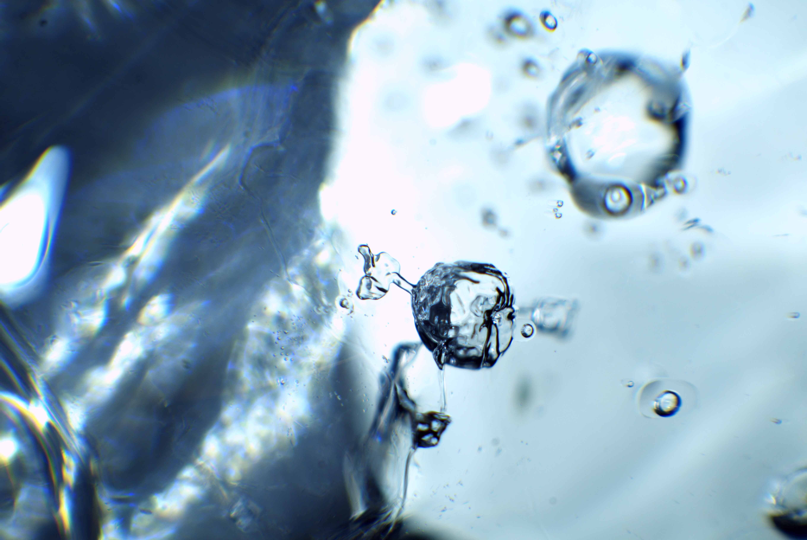

Into Ocean and Ice
Exhibiting artist (microphotography prints), soundscape composer, and video projection (Cryosphere).

Into Ocean and Ice: Artists explore a changing Antarctica — Hui Te Ananui a Tangaroa, New Zealand Maritime Museum, 29 Nov 2024 – 31 Aug 2025.
My works include a special series of glass-printed micrographs, a floor projection, and an immersive musical soundscape. In the weeks before our arrival, one of the world’s largest icebergs (A76A) had run aground to the south, fracturing into millions of pieces — some of these pieces ended up under my microscope, collected from freezing waters in a zodiac and broken apart with an ice pick.
That exploration culminated in Cryosphere: a circular floor projection created from hours of time-lapse footage of melting Antarctic shelf ice and snow.
Throughout the exhibition, speakers play location-specific recordings from South Georgia alongside an ambient musical piece I composed, inspired by my experiences of this beautiful, if harsh, region.